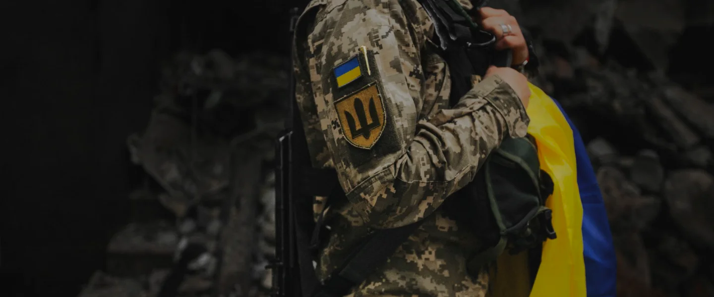

Харківська областна громадська організація “Спілка ветеранів АТО”
була заснована у квітні 2015 року у м. Харкові, після того як
звичайні бійці, учасники АТО нарешті почали усвідомлювати реальне
положення справ у країні: те що неоголошена війна швидко не
скінчиться й про них особово ніхто не збирається піклуватися.
Дійсність така: державі потрібні нові мобілізовані, а між тим
додому почали повертатися перші дембеля зі своїми проблемами.
Тож, знову наш девіз: “НІХТО КРІМ НАС, КОЛИ – ЯКЩО НЕ ЗАРАЗ?”
Ми
відстояли Україну, й впевнені – зможемо захистити тепер свої
інтереси. Головне – не дати перетворитися всім знову на торгашей,
ми сподіваємось що цей період для нашої країни скінчився. За це ми
заплатили найдорожчим – кровю своїх братів.
Свою назву “Спілка
ветеранів” ми обрали виходячі не з бажання привернути до себе
увагу чи скористатися пошаною суспільства до голосного слова
“ветерани”. На наш погляд – ветеран це не просте визначення віку
людини, а скоріше визначення її життєвого досвіду, у тому разі
розумової спритності – реакції на події, незвичайні для інших.
Постійна нервова напруга, відсутність звичайних законів мирного
часу, раптова небезпека, там де ти її нечекаєш – багатьох навчили
розуміти приховане…
Серед засновників нашої організації є бійці і
Національної Гвардії, ЗСУ, прикодонників, й звичайно добровольчих
батальйонів.
Головною метою діяльності ГО “Спілка ветеранів АТО” є
сприяння консолідації і координації зусиль ветеранів АТО, сімей
загиблих, їх об’єднань у справі широкого, більш ефективного
використання наявних можливостей у забезпеченні захисту своїх
політичних, економічних, соціальних прав, створення для них
належних умов для повноцінної реабілітації, працевлаштування та
повернення до нормального життя, наданню оздоровчої, медичної,
психологічної та моральної допомоги членам громадської
організації, в першу чергу інвалідам АТО та сім’ям загиблих.
Го
“Спілка ветеранів АТО” отримала статус юридичної особи 22 квітня
2015 року.
На даний час до організації входить більше ніж 14 000
учасників АТО/ООС зі всієї України, де Харківська область 12 000
учасників АТО/ООС.
Голова Ради ГО “Спілка ветеранів АТО” –
Волчелюк Віктор Анатолійович
Секретар Ради ГО “Спілка ветеранів
АТО” – Корсунов Юрій Миколайович
Ми запрошуємо до своїх лав усіх
патріотів-учасників АТО, тих, хто дійсно не побоявся взяти зброю в
свої руки і стати на захист рідної землі у важкі часи.